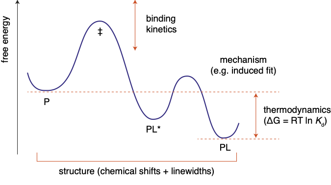
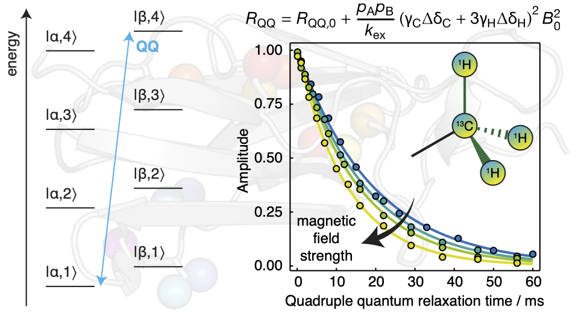
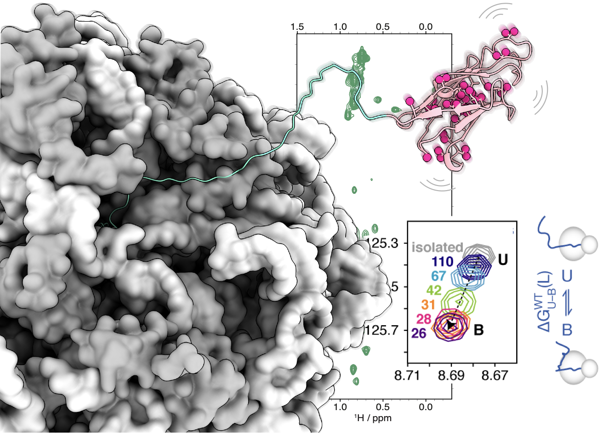
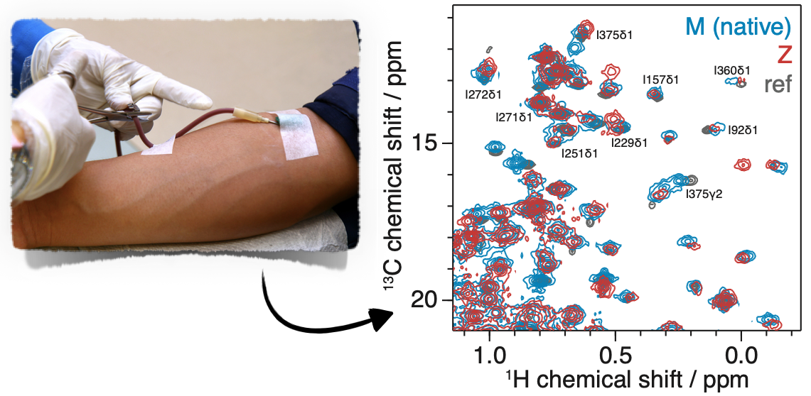

Research
Structure and dynamics of molecular interactions using NMR spectroscopy
NMR lineshape analysis
 NMR titrations are rich in structural and mechanistic detail about molecular interactions. We have carried out theoretically rigorous studies of the impact of chemical exchange on common two-dimensional NMR experiments, culminating in new data analysis approach termed two-dimensional lineshape analysis.
We are developing improved acquisition schemes and easy-to-use analysis methods, including the popular software package NMR TITAN, to extract the fullest possible information from your experimental measurements.
NMR dynamics & methodology
 We continue to push the capabilities of NMR spectroscopy with the development of new experiments for the analysis of biomolecular dynamics.
Recently, this has included the identification of long-lived high-order coherences within methyl groups that can be studied to provide sensitive probes of chemical exchange, improved experimental schemes for the sensitive measurement of cross-correlated relaxation within low-concentration or unstable samples such as ribosome-nascent chain complexes, and the application of optimal design theory to acquire adaptively sampled relaxation measurements.
Protein folding and misfolding
 The efficient biosynthesis of proteins, and the subsequent folding to their native states, is a process of central importance to biology. The failure of proteins to reach their native structure can result in disorders arising from loss of function, or in the population of toxic misfolded or aggregated states that are implicated in severe neurological disorders. The Waudby group is interested in applications of NMR spectroscopy to provide unique, residue-specific probes of protein structure and dynamics during protein biosynthesis and folding.
During his time in the Christodoulou group at UCL, Chris developed particular expertise in NMR spectroscopy of co-translational folding within translationally-arrested ribosome-nascent chain complexes. Co-translational folding is a fundamental mechanism for ensuring efficient protein biosynthesis, minimising the wasteful or hazardous formation of misfolded states, but developing a structural understanding of co-translational folding pathways has been a major experimental challenge. By developing and applying advanced NMR methods, we have begun to make progress in understanding the evolution of the free-energy landscape as a nascent chain emerges from the ribosome, and the major role that interactions between the nascent chain and ribosome surface can have on the folding process.
Ex vivo NMR
 α1-antitrypsin (α1AT) is a 52 kDa serine protease inhibitor found at high concentrations in human plasma. The Z mutation (E342K) occurs in 1 in 1700 Northern Europeans and promotes polymerisation leading to liver cirrhosis and early onset emphysema. Polymerisation is thought to progress from a near native, monomeric species of an unknown conformation, but a recent crystal structure of the polymerogenic Z variant revealed few differences to the wild type variant, suggesting that changes in aggregation behaviour lie with the differences in structural dynamics between variants. To address this we are using NMR measurements of structure and dynamics to characterise the structure, dynamics and polymerisation of α1AT. We have developed strategies to study patient-derived samples of wild-type and disease-associated α1AT variants using 2D 1H,13C NMR at natural abundance. This provides access to natively-glycosylated variants that often cannot be expressed recombinantly, providing important insights into the conformation and dynamics of α1AT in solution.
Collaborations
We are always happy to work together with other researchers, and have enjoyed a number of successful collaborations with groups around the world, including:
- Badjic group (Ohio State)
- Bellotti group (UCL / Pavia)
- Christodoulou group (UCL)
- Lomas group (UCL)
- Peters group (Lübeck)
- Pielak group (UNC Chapel Hill)
- Tripsianes group (Brno)
Please get in touch if you have a problem you'd like to work together on!